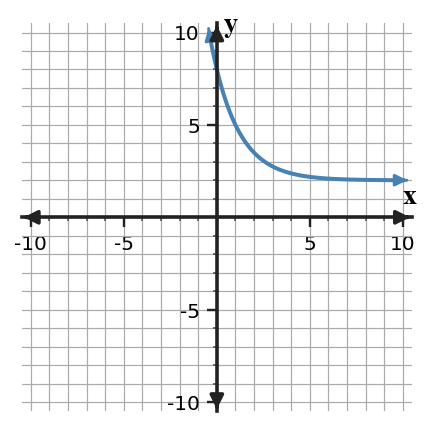
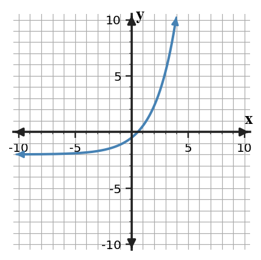
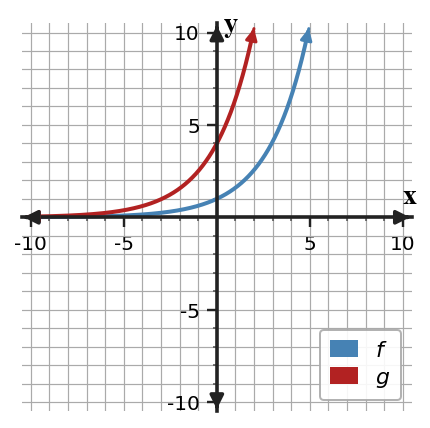

Unit 7 DOK 2.3 Graphing and Features Connection Task V1
Name:
Show work and mark answers clearly.
1.
Graph $y=3(2)^x$ on the blank coordinate plane using at least five points. Then describe one key feature of the graph.

Graph $y=3(2)^x$ on the blank coordinate plane using at least five points. Then describe one key feature of the graph.
Graph $y=6(0.5)^x$ on the blank coordinate plane using at least five points. Then describe one key feature of the graph.
Graph $y=2(1.5)^x+1$ on the blank coordinate plane using at least five points. Then describe one key feature of the graph.
Graph $y=8(0.5)^x-2$ on the blank coordinate plane using at least five points. Then describe one key feature of the graph.
Use the graph to estimate the $y$-intercept and horizontal asymptote. Then decide whether the function represents growth or decay.

Use the graph to estimate the $y$-intercept and horizontal asymptote. Then decide whether the function represents growth or decay.

The two graphs have the same multiplier. Compare the starting values and describe how that affects the graphs.

The two graphs have the same multiplier. Compare the starting values and describe how that affects the graphs.
